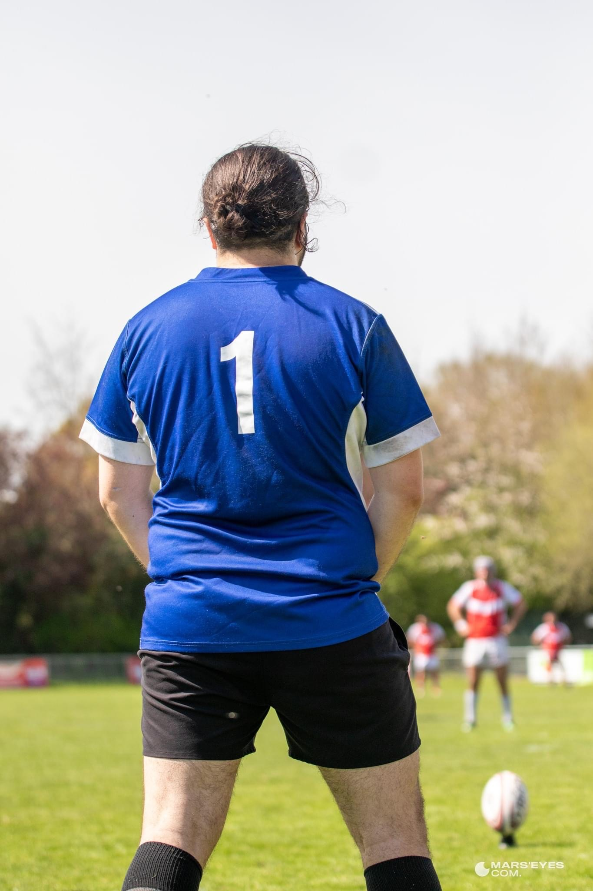
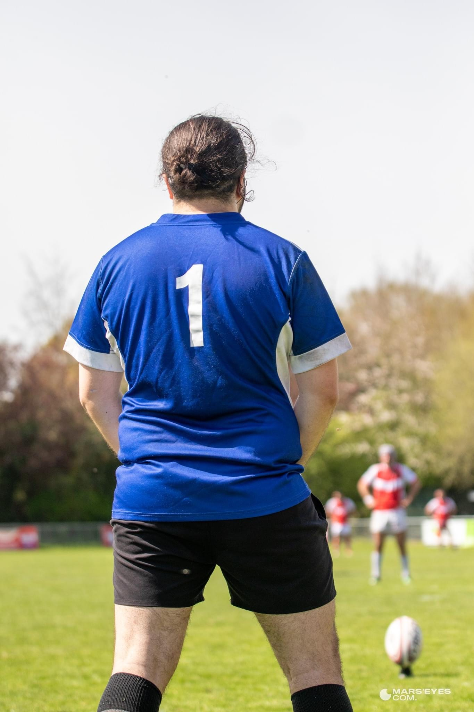
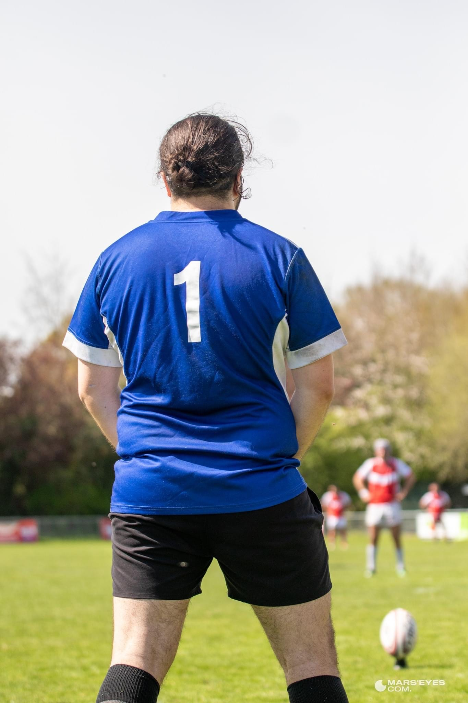

Je suis Gaspard Lachaize né le 15 Août 1998
Je suis expert en rien du tout mais je suis passionné par le sport et sortir pour voir les copains surtout ceux du rugby. Avec eux pas d'ennui possible!!!
Le rugby c'est vraiment trop bien
 


Je suis expert en rien du tout mais je suis passionné par le sport et sortir pour voir les copains surtout ceux du rugby. Avec eux pas d'ennui possible!!!
